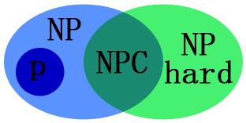

NP完全性¶
约 3858 个字 1 张图片 预计阅读时间 15 分钟
这部分内容上课就没怎么听懂，课后看讲义也好多搞不清楚的地方，就只稍微写写一些基本的概念，不过据说在考试里这部分内容不会占很大的比重...
判定问题¶
回忆以前所学的内容，所谓算法就是为解决某些或某个特定问题而设计的一系列有序的操作。一个算法接收一个输入 \(I\)，并在有限时间内产生一个输出 \(O\)。
所谓判定问题，就是一个答案只有“是”或“否”的问题。
-
不可判定问题（undecidable problem）：是一个判定问题，但是可以被证明并不存在一个算法能够解决这个问题（也就是说不存在一个算法能够总是给出正确的“是或否”答案）。
- 例如：停机问题（halting problem）、哥德尔不完备定理（Gödel's incompleteness theorems）、波斯特对应问题（Post correspondence problem）等。
-
可判定问题（decidable problem）：是一个判定问题，可以被证明存在一个算法能够解决这个问题。
对于我们接下来讨论的复杂类，我们都默认是在讨论可判定问题。
图灵机¶
图灵机
图灵机（Turing Machine）是计算理论中的一个重要模型，它是由英国数学家艾伦·图灵（Alan Turing）在1936年提出的，用来形式化地描述计算的过程。图灵机的引入为后来的计算机科学、复杂度理论和自动机理论奠定了基础。图灵机被广泛用作定义“可计算性”和“计算问题”的基本模型。
基本构成¶
图灵机可以简单地看作是一个非常抽象的计算设备，它由以下几个部分组成：
-
无限长的纸带（Tape）： 图灵机的计算空间是由一条无限长的纸带构成。纸带上的每一格要么是空的，要么写有一个字符 \(s\)（\(s \in S\)，\(S\) 为有限集），符号的集合 \(S\) 称为“字母表” （Alphabet）。纸带可以向左或向右移动，模拟计算机的内存。
-
读写头（Head）： 图灵机上有一个读写头，它位于纸带上的某个格子。读写头的作用是读取当前位置的符号，并且可以根据计算过程的需要修改该位置的符号。读写头还可以沿着纸带向左或向右移动。
-
状态集（State Set）： 图灵机有一组可能的状态 \(Q\) ，图灵机在某一时刻总处于其中一个状态。状态集中有两个特殊的状态，分别是起始状态（Start State）和终止状态（Accepting / Rejecting State）。图灵机的计算就是通过从一个状态转换到另一个状态来进行的。
-
转移函数（Transition Function）： 转移函数描述了图灵机在当前状态 \(q\) 下，基于当前读写头所读取的符号 \(s\)，应该执行什么操作。操作包括：
- 修改当前位置的符号（更改符号、清空当前位置、往空格子上书写符号）
- 移动读写头（向左或向右）
- 转换到下一个状态
-
停机状态（Halting State）： 图灵机在某一时刻可能会进入停机状态，这时图灵机的计算过程结束。
工作原理¶
图灵机的工作过程可以描述为以下几个步骤：
- 图灵机从起始状态开始，读写头位于纸带的某个位置。
- 根据当前状态和读写头所在格子的符号，图灵机根据转移函数执行操作：
- 写一个符号到当前格子。
- 移动读写头（左移或右移）。
- 转换到一个新的状态。
- 图灵机继续执行上述步骤，直到它进入一个停止状态，或者陷入无法终止的循环。
Info
事实上上面定义的图灵机我们称为“确定性图灵机”（Deterministic Turing Machine），还有一种“非确定性图灵机”（Non-deterministic Turing Machine），
按照上面的定义，确定性图灵机对于当前的状态和读入的字符 \((q,s)\)，有一个唯一确定的转移函数 \(\delta(q,s) = (q', s')\)，也就是说要转移到的下一个状态是确定的。
而非确定性图灵机对于当前的状态和读入的字符 \((q,s)\)，转移函数的值域是一个集合 \(\delta(q,s) = \{(q_1, s_1), (q_2, s_2), \cdots\}\)，它有多种可能的转移方式。
- 对于所有可能的路径中，只要有一条路径能够使非确定性图灵机进入停机状态，那么我们就称它会停机。
- 在判定性问题中，只要有一条路径接受，那么整个图灵机就接受，也就是说只有所有路径都拒绝，整个图灵机才拒绝。
复杂类¶
几种常见的复杂类
我们称一个算法是一个多项式时间的算法，如果存在一个多项式 \(p(n)\)，使得对于任意输入 \(I\)，算法在多项式时间 \(p(n)\)（或多项式个步骤）内能够产生输出 \(O\)。
所谓 \(P\) 问题，就是所有可以被多项式时间算法解决的问题构成的集合。
\(NP\)（Non-deterministic Polynomial time）问题是一种复杂类，其中的问题可以在多项式时间内验证一个解是否正确，但是并不确定能够在多项式时间内找到一个解。
- 所谓验证（verify），就是给定一个解，把它带入到这个问题中，然后检查这个解是否正确。
显然，\(P \subseteq NP\)，因为一个问题如果可以在多项式时间内解决，那么它也一定可以在多项式时间内验证一个解是否正确。
多项式时间的验证
We say \(B\) is an efficient verifier for a problem \(X\) if
- \(B\) is a polynomial-time algorithm that takes two inputs: an instance \(x\) of \(X\) and a certificate \(y\).
- there exists a polynomial \(p\) such that for every \(x \in X\), there is a certificate \(y\) of length at most \(p(|x|)\) such that \(B\) accepts \((x, y)\).
co-NP
\(co-NP\) 是 \(NP\) 的补集，即 \(co-NP = \{L | \overline{L} \in NP\}\)。
\(NP\) 问题可以在多项式时间内验一个解是否正确，但不能在多项式时间内验一个解是否错误。而 \(co-NP\) 问题恰好相反，它可以在多项式时间内验证一个解是否错误，但不能在多项式时间内验证一个解是否正确。
\(NP\) 和 \(co-NP\) 都不一定在多项式时间内找到一个解。
\(NP\text{-hard}\) 问题是一种复杂类，是指所有的问题问题都可以在多项式时间内归约到 这一类问题。
这说明 \(NP\text{-hard}\) 问题至少不会比所有的 \(NP\) 问题更容易，因为如果我们解决了一个 \(NP\text{-hard}\) 问题，而 \(NP\) 问题可以在多项式时间内归约到这个问题，那么我们可以把这个归约倒推回去，就解决了所有的 \(NP\) 问题。
\(NP\text{-hard}\) 问题不一定是 \(NP\) 问题。
\(NPC\)（\(NP\text{-complete}\)）问题是指既是 \(NP\) 问题，又是 \(NP\text{-hard}\) 问题的一类问题，也就是说 \(NPC\) 问题是 \(NP\) 问题中的最困难的一类问题。 $$ NPC = NP \cap NP\text{-hard} $$ 如果一个 \(NPC\) 问题能在多项式时间内解决，那么所有的 \(NP\) 问题都能在多项式时间内解决。这就说明 \(NPC \subseteq P\)，于是 \(NP = P\)，也就是说 $$ NPC \subseteq P \Rightarrow NP = P $$
对以上四者的总结
- \(P\) 问题能在多项式时间内解决，也可以在多项式时间内验证。
- \(NP\) 问题可以在多项式时间内验证，但不一定能在多项式时间内解决。
- \(NPC\) 问题是 \(NP\) 问题的子集 \(NPC \subseteq NP\)
- \(NP\text{-hard}\) 问题是所有 \(NP\) 问题都可以在多项式时间内归约到的问题，但它未必是 \(NP\) 问题。

P 和 NP 的另一种定义
事实上 P 和 NP 还有另一种定义方式，但是只需要了解即可
- P 问题是指可以用一个确定性图灵机在多项式时间内解决的问题。
- NP 问题是指可以用一个非确定性图灵机在多项式时间内解决的问题。
一些常见的例子¶
多项式时间问题¶
-
欧拉回路问题（Eulerian Circuit Problem）：
给定一个无向图 \(G=(V,E)\)，判断是否存在一条简单回路，使得它包含图 \(G\) 的每一条边，且每一条边只经过一次。这个问题可以在 \(O(|E|)\) 的时间内使用深度优先搜索解决。
-
最短路径问题：
给定一个有向图 \(G=(V,E)\)，以及一个起点 \(s\) 和一个终点 \(t\)，求从 \(s\) 到 \(t\) 的最短路径。这个问题可以在 \(O(|V||E|)\) 的时间内解决，而对于一个图来说输入规模可以视为 \(|V|+|E|\)，因此这个问题可以在多项式时间内被解决。
NPC 问题¶
-
旅行商问题（Traveling Salesman Problem，TSP）：
给定一个无向图 \(G=(V,E)\)，以及一个起点 \(s\)，求一条简单回路，使得它包含图 \(G\) 的每一个顶点，且总长度最短。虽然我们不能在多项式时间内找到最优解，但如果给定一个候选解（即某条旅行路线），我们可以在多项式时间内验证其总距离是否最短。
-
3-SAT 问题：
给定一个含有若干个子句的布尔表达式，其中每个子句都包含三个变量，每个变量要么为真要么为假，求是否存在一种赋值方式使得整个公式为真。这是一个著名的 \(NPC\) 问题。
-
图着色问题（Graph Coloring Problem）：
给定一个无向图 \(G=(V,E)\)，以及一个正整数 \(k\)，求是否存在一种至多使用 \(k\) 种颜色的着色方式，使得图 \(G\) 的每一个顶点都被着色，且相邻的顶点不能被着相同的颜色。这也是一个 \(NPC\) 问题。
-
最大团问题（Maximum Clique Problem）：
给定一个图以及一个正整数 \(k\)，求是否存在一个包含至少 \(k\) 个顶点的团（即完全子图）。
0-1 背包问题
0-1 背包问题可以使用一个时间复杂度为 \(O(nC)\) 的动态规划算法解决，其中 \(n\) 为物品的数量，\(C\) 为背包的容量。但它并不是一个多项式时间的算法，因为容量 \(C\) 在输入时是以二进制形式给出的，位数是 \(d = \log C\) 级别的，因此这个算法实际上是 \(O(n2^d)\) 的时间复杂度，是输入的指数级别的。
需要不断提醒自己，多项式时间的算法是指用时是输入规模的多项式，而不是输入的数值的多项式。
形式语言¶
考虑一个含有至多可数个元素的集合 \(\Sigma\)，我们称这个集合为一个字母表（Alphabet）。字母表中的元素称为符号（Symbol），在 \(\Sigma\) 中的字符串（string）定义为有限个（包括 0 个）的有序连接。我们记所有这样的字符串构成的集合为 \(\Sigma^*\)。
我们取所有字符串 \(\Sigma^*\) 的一个子集 \(L\)，我们称这个子集 \(L\) 为一个形式语言（formal Language）。形式语言具有以下几个性质：
- 至多可数的集合上的有限字符串是可数的
- 语言可以做衔接、并、交、补、Kleene 闭包等运算
Note
-
判定问题：给定语言 \(L\)，判断某个字符串 \(\omega\) 是否在 \(L\) 中，这被称为判定问题（decision problem）；
- \(A\) solves (or decides) a language \(L\) if for every string \(\omega\), \(A\) outputs "yes" if \(\omega \in L\) and "no" if \(\omega \notin L\).
-
搜索问题：给定语言 \(L\)，寻找某个字符串 \(\omega\) 使得 \(\omega\) 在 \(L\) 中（search problem）；
- 转换问题：给定语言 \(L_1,L_2\)，计算某个从 \(L_1\) 到 \(L_2\) 的函数
PPT 上关于形式语言的定义
这定义就是一大坨，但是考试还大概率会遇见...😫
- An alphabet \(\Sigma\) is a finite set of symbols
- A language \(L\) over \(\Sigma\) is any set of strings made up of symbols from \(\Sigma\)
- Denote empty string by \(\varepsilon\)
- Denote empty language by \(\emptyset\)
- Language of all strings over \(\Sigma\) is denoted by \(\Sigma^*\)
- The complement of \(L\) is denoted by \(\overline{L} = \Sigma^* - L\)
-
The concatenation of two languages \(L_1\) and \(L_2\) is the language
\(L = \{ x_1x_2 : x_1 \in L_1 \text{ and } x_2 \in L_2 \}\)
-
The closure or Kleene star of a language \(L\) is the language $$ L^*= {\varepsilon} \cup L \cup L^2 \cup L^3 \cup \cdots$$ where \(L^k\) is the language obtained by concatenating \(L\) to itself \(k\) times
-
Algorithm \(A\) accepts a string \(x \in \{0, 1\}^*\) if \(A(x) = 1\)
- Algorithm \(A\) rejects a string \(x\) if \(A(x) = 0\)
- A language \(L\) is decided by an algorithm \(A\) if every binary string in \(L\) is accepted by \(A\) and every binary string not in \(L\) is rejected by \(A\)
- To accept a language, an algorithm need only worry about strings in \(L\), but to decide a language, it must correctly accept or reject every string in {0, 1}*
- 字母表：\(\Sigma\) 是一个有限的符号集合
- 语言：\(L\) 是由 \(\Sigma\) 中的符号组成的字符串集合
- 空字符串：用 \(\varepsilon\) 表示
- 空语言：用 \(\emptyset\) 表示
- 所有字符串上的语言：用 \(\Sigma^*\) 表示（这个定义非常奇怪）
- 补语言：\(L\) 的补集用 \(\overline{L} = \Sigma^* - L\) 表示
- 连接：两个语言 \(L_1\) 和 \(L_2\) 的连接是 \(L = { x_1x_2 : x_1 \in L_1 \text{ and } x_2 \in L_2 }\)
-
闭包或 Kleene 星：是 \(L^* = {\varepsilon} \cup L \cup L^2 \cup L^3 \cup \cdots\)，其中 \(L^k\) 是将 \(L\) 自身连接 \(k\) 次得到的语言
-
对于一个字符串 \(x \in {0, 1}^*\)，如果 \(A(x) = 1\)，则称算法 \(A\) 接受 \(x\)
- 对于一个字符串 \(x\)，如果 \(A(x) = 0\)，则称算法 \(A\) 拒绝 \(x\)
- 如果一个算法 \(A\) 对语言 \(L\) 中的每个二进制字符串都接受，并且对不在 \(L\) 中的每个二进制字符串都拒绝，那么我们说 \(A\) 决定（判定、解决）了语言 \(L\)。
Karp 归约¶
Karp 归约
设 \(L_1\) 和 \(L_2\) 是两个形式语言，如果存在一个多项式时间的算法 \(f\)，使得对于任意字符串 \(\omega\)，我们有
那么我们称 \(L_1\) 可以在多项式时间内归约（或 Karp 归约，reduce）到 \(L_2\)，记作 \(L_1 \leqslant_p L_2\)。
这说明 \(L_2\) 的“难度”至少不低于 \(L_1\) 。
如果 \(L_1 \leqslant_p L_2\) 且 \(L_2 \leqslant_p L_1\)，那么我们称 \(L_1\) 和 \(L_2\) 是多项式时间等价的，记作 \(L_1 \equiv_p L_2\)。
Note
考虑一个复杂度类 \(C\)，如果一个问题 \(P\) 满足 \(x \in C, x \leqslant_p P\)，那么我们就说 \(P\) 是 \(C\) 困难的；如果同时 \(P \in C\)，那么我们就说 \(P\) 是 \(C\) 完全的。
回顾我们之前关于 \(NP\text{-hard}\) 和 \(NPC\) 的定义，我们可以发现：
- 如果发现一个可以在多项式时间内解决的 \(NPC\) 问题，那么根据 \(P \subseteq NP\)，我们可以得到 $$ NP \leqslant_p NPC \subseteq P \Longrightarrow NP = P $$
- 如果可以证明所有的 \(NPC\) 问题都不能在多项式时间内解决，那么就说明 $$ NPC \not\subseteq P \Longrightarrow NP \neq P $$ 但是直到目前为止，还没有人能证明 \(P \neq NP\) 或者 \(P = NP\)。